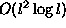

This paper discusses a new, high spatial order vortex method that approximates the vorticity field of a fluid flow with elliptical Gaussian basis functions that translate, spread, elongate and rotate with the flow. The primary justification for studying the properties of this method is to perform practical calculations with a small number of computational elements, but the method possesses interesting mathematical properties that are interesting in and of themselves.
Vortex methods approximate the vorticity field as linear combination of either delta functions (point vortices) or localized basis functions (vortex blobs). The latter is viewed by some investigators as a regularization of the Biot-Savart kernel. The point vortex method dates by to Rosenhead's 1932 calculation of vortex sheet instabilities [21]. In a point vortex calculation, each point vortex moves with the flow velocity measured at the point vortices' position. The greatest difficulty in calculations using point vortices is the singularity in the induced velocity field. As distance between computational elements decreases, the velocity field increases requiring smaller time steps. However, despite the stiffness in point vortex dynamics, these methods are convergent in the sense that trajectories of the computational elements will approach exact trajectories as one uses more and more point vortices to approximate the field as shown by Goodman, Hou and Lowengrub [8]. Nevertheless, practical applications require more expedient time integration, so that mo investigators regularize the Biot-Savart integral.
Regularizing the Biot-Savart velocity calculation is equivalent to using localized distributions of vorticity rather than point vortices as computational elements. The computational elements move with the flow velocity at the centroid determined from a Biot-Savart integral. The shape of the blob is justified either mathematically or physically as a regularization of the delta function. For instance, Gaussian basis functions are a natural viscous regularization of a delta function source of vorticity. Usually, though not always, the basis functions are radially symmetric, and the Biot-Savart integral has a analytic solution. References on a wide variety of vortex method implementations can be found in [13, 25]. In studying the convergence properties of vortex methods, Beale and Majda proved that certain radially symmetric functions would yield higher spatial accuracy based on moment conditions [3, 13]. These moment conditions arise when integrating the basis function against a Taylor expansion of the vorticity field. Lowengrub and Shelley have boosted the order of Lagrangian schemes by coupling point vortex dynamics to an underlying curvilinear coordinates system that does not necessarily move with the fluid velocity as Lagrangian methods do [15]. Later, with Merriman, they expanded this work by incorporating high-order corrections on a rectangular grid to achieve fourth-order spatial accuracy [16]. However, another approach is to have the dynamics of the basis function coupled to the velocity field and its derivatives. The resulting method would require the computational elements to have additional degrees of freedom to capture the dynamics of the velocity field expansion. These additional degrees of freedom correspond to a deforming basis function or ``blob.''
Other investigators have explored both non-symmetric and deforming basis functions in the hopes that they would adaptively resolve vorticity fields and passive scalar fields. Meiburg developed a scheme in which radially symmetric blobs representing sections of a vortex sheet would expand or contract based on normal flow deviations, but schemes such as these violate incompressibility and have other problems for more general flows [18]. Marshall and Grant have used highly anisotropic elements to satisfy the no-slip, no normal flow boundary conditions efficiently. Teng originally used rigid elliptical patches to resolve boundary layers more efficiently and later used deforming elliptical patches to simulate the evolution of vortex sheets [26, 27, 28]. This work was not coupled to any adaptive refinement techniques though Teng does refer to the necessity of some sort of refinement to make these methods work, and he establishes a theoretical

rate of convergence for his method. To simulate the convection and diffusion of passive scalar quantities, Leonard uses deforming elliptical Gaussian basis functions, noting that they remain self-similar under the linearized convection-diffusion equations. Up to this point, such approaches have not been considered for vortex methods because there is no known Biot-Savart integral for elliptical Gaussians that can be expressed in terms of elementary functions.Vortex methods, perhaps more than any other scheme used to compute fluid flows, closely resemble a simplified physical model because the evolution of each computational element approximates the evolution of a patch of vorticity. For certain flows such as the Kida vortex in a linear flow, a ``vortex method'' consisting of a single elliptical patch would represent an exact solution to the Euler equations [11]. It is important to note that no such work can exist for an elliptical Gaussian region of vorticity because this region is not necessarily self-similar under the action of the Navier-Stokes equations.
This paper describes the implementation and practicalities of the
Elliptical Corrected Core Spreading Vortex Method (ECCSVM), but some
details are left to a later paper for further explanation and proof in
forthcoming manuscripts. Specifically, the error bounds and details of the
merging algorithm are left to a future article and do not add anything to
the understanding of ECCSVM. However, merging techniques do enhance the
efficiency of ECCSVM considerably.
§2 is a broad overview of the numerical method. I derive the
ODEs governing the motion and evolution of elliptical basis functions
in §3, and discuss some of their properties.
I also describe the behavior of this method relative to
integral invariants of the Navier-Stokes equations. I analyze the
residual of linearized vorticity dynamic operator applied to this method and
determine a  spatial accuracy.
In this section, I also calculate a fourth
order asymptotic expansion of the velocity and velocity deviations
fields induced by an elliptical Gaussian vorticity field because there
is no known expression for these Biot-Savart integrals as simple
combinations of elementary functions. In §4, I
describe a spatial refinement procedure for replacing a wide
computational element with a configuration of two thinner elements
while introducing a small controllable error. In §5,
I perform some sample calculations and verify that the anticipated
rate of convergence is achieved.
spatial accuracy.
In this section, I also calculate a fourth
order asymptotic expansion of the velocity and velocity deviations
fields induced by an elliptical Gaussian vorticity field because there
is no known expression for these Biot-Savart integrals as simple
combinations of elementary functions. In §4, I
describe a spatial refinement procedure for replacing a wide
computational element with a configuration of two thinner elements
while introducing a small controllable error. In §5,
I perform some sample calculations and verify that the anticipated
rate of convergence is achieved.